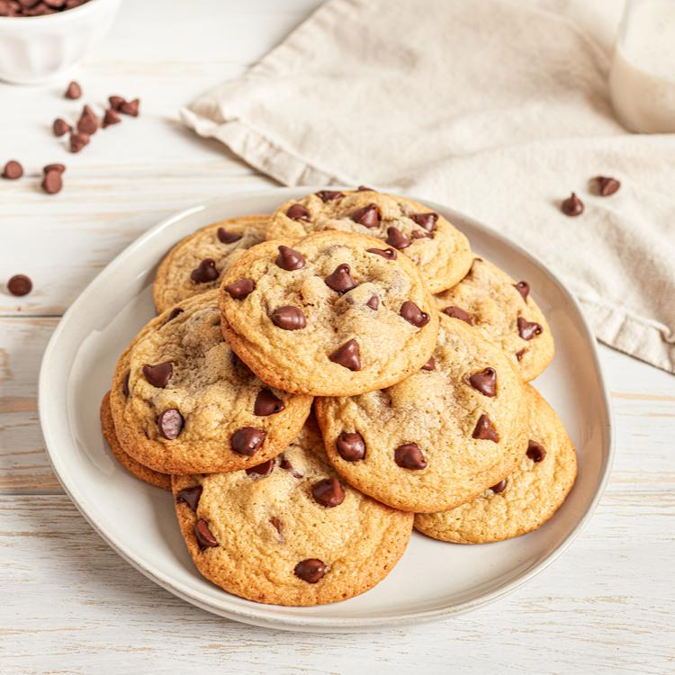

Best Choc-chip Cookies

Description:
Texture: The texture should be crispy on the outside and chewy on the inside. This can be achieved by using a mix of brown and white sugars and not overbaking the cookies.
Flavor: The cookie should have a rich, buttery flavor with a hint of vanilla. The chocolate chips should be semi-sweet and not too overwhelming in flavor.
Appearance: The cookie should be golden brown on the outside and slightly lighter in the center, with visible chocolate chips scattered throughout.
Ingredients:
- 1 cup unsalted butter melted and cooled at least 10 minutes (226g)1 cup unsalted butter melted and cooled at least 10 minutes (226g)
- 1 ¼ cup brown sugar tightly packed (250g)
- ½ cup sugar (100g)½ cup sugar (100g)
- 1 large egg + 1 yolks (room temperature preferred)*1 large egg + 1 yolks (room temperature preferred)*
- 1 ½ teaspoon vanilla extract1 ½ teaspoon vanilla extract
- 2 ¾ cups all-purpose flour (350g)2 ¾ cups all-purpose flour (350g)
- 1 teaspoon baking soda1 teaspoon baking soda
- ¾ teaspoon salt¾ teaspoon salt
- 1 ¾ cup semisweet chocolate chips (plus additional for tops, optional) (300g + additional)1 ¾ cup semisweet chocolate chips (plus additional for tops, optional) (300g + additional)
Steps:
- Combine melted butter and sugars in a large bowl. Stir very well.
- Add egg and egg yolk, stir well.
- Stir in vanilla extract. Set aside.
- In a medium-sized bowl, whisk together flour, baking soda, and salt.
- Gradually add flour mixture to wet ingredients -- stir well so that all the flour is absorbed.
- Stir in chocolate chips.
- Place dough in refrigerator and chill for 30 minutes.
- Preheat oven to 350°F (177°C) and prepare cookie sheets by lining with parchment paper.
Scoop dough by rounded 1 ½ tablespoon onto prepared cookie sheets, placing at least 2" apart.
Bake for 11 minutes -- cookies may still seem slightly soft in the centers, that is OK, they will cook completely on the cookie sheets. Don't over-bake or your cookies will be too hard.
If desired, gently press additional chocolate chips into the tops of the warm cookies.
Allow to cool completely on cookie sheets.